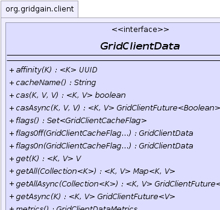
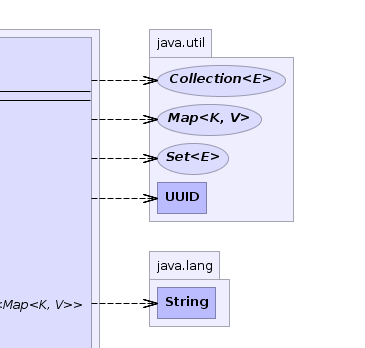
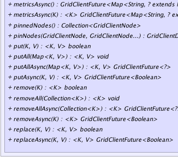
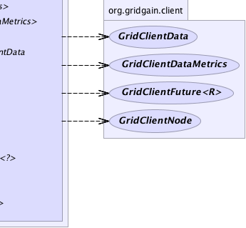

|
|

|

|
|

|

|
|
GridGain™ 4.0.2
Java Client |
|||||||||
| PREV CLASS NEXT CLASS | FRAMES NO FRAMES | |||||||||
| SUMMARY: NESTED | FIELD | CONSTR | METHOD | DETAIL: FIELD | CONSTR | METHOD | |||||||||
public interface GridClientData
A data projection of grid client. Contains various methods for cache operations ant metrics retrieval.
| Wiki | |
| Forum |
|  |  |
|  |  |
| Method Summary | ||
|---|---|---|
|
affinity(K key)
Gets affinity node ID for provided key. |
|
String |
cacheName()
Gets name of the remote cache. |
|
|
cas(K key,
V val1,
V val2)
Sets entry value to val1 if current value is val2. |
|
|
casAsync(K key,
V val1,
V val2)
Asynchronously sets entry value to val1 if current value is val2. |
|
|
get(K key)
Gets value from default cache. |
|
|
getAll(Collection<K> keys)
Gets entries from default cache. |
|
|
getAllAsync(Collection<K> keys)
Asynchronously gets entries from default cache. |
|
|
getAsync(K key)
Asynchronously gets value from default cache. |
|
GridClientDataMetrics |
metrics()
Gets metrics for default cache. |
|
|
metrics(K key)
Gets metrics for entry. |
|
GridClientFuture<GridClientDataMetrics> |
metricsAsync()
Asynchronously gets metrics for default cache. |
|
|
metricsAsync(K key)
Asynchronously gets metrics for entry. |
|
Collection<GridClientNode> |
pinnedNodes()
Gets pinned node or null if no node was pinned. |
|
GridClientData |
pinNodes(GridClientNode node,
GridClientNode... nodes)
Gets client data which will only contact specified remote grid node. |
|
|
put(K key,
V val)
Puts value to default cache. |
|
|
putAll(Map<K,V> entries)
Puts entries to default cache. |
|
|
putAllAsync(Map<K,V> entries)
Asynchronously puts entries to default cache. |
|
|
putAsync(K key,
V val)
Asynchronously puts value to default cache. |
|
|
remove(K key)
Removes value from default cache. |
|
|
removeAll(Collection<K> keys)
Removes entries from default cache. |
|
|
removeAllAsync(Collection<K> keys)
Asynchronously removes entries from default cache. |
|
|
removeAsync(K key)
Asynchronously removes value from default cache. |
|
|
replace(K key,
V val)
Replaces value in default cache. |
|
|
replaceAsync(K key,
V val)
Asynchronously replaces value in default cache. |
|
| Method Detail |
|---|
String cacheName()
GridClientData pinNodes(GridClientNode node,
GridClientNode... nodes)
throws GridClientException
GridClientDataAffinity provided - this method allows
to override default behavior and use only specified server for all cache operations.
Use this method when there are other than key-affinity reasons why a certain
node should be contacted.
GridClientException - If resulting projection is empty.node - Node to be contacted.nodes - Optional additional nodes.
Collection<GridClientNode> pinnedNodes()
null if no node was pinned.
<K,V> boolean put(K key, V val) throws GridClientException
GridClientException - In case of error.key - Key.val - Value.
<K,V> GridClientFuture<Boolean> putAsync(K key, V val) throws GridServerUnreachableException, GridClientClosedException
GridServerUnreachableException - If none of the servers can be reached.
GridClientClosedException - If client was closed manually.key - key.val - Value.
<K,V> void putAll(Map<K,V> entries) throws GridClientException
GridClientException - In case of error.entries - Entries.<K,V> GridClientFuture<?> putAllAsync(Map<K,V> entries) throws GridServerUnreachableException, GridClientClosedException
GridServerUnreachableException - If none of the servers can be reached.
GridClientClosedException - If client was closed manually.entries - Entries.
<K,V> V get(K key) throws GridClientException
GridClientException - In case of error.key - Key.
<K,V> GridClientFuture<V> getAsync(K key) throws GridServerUnreachableException, GridClientClosedException
GridServerUnreachableException - If none of the servers can be reached.
GridClientClosedException - If client was closed manually.key - key.
<K,V> Map<K,V> getAll(Collection<K> keys) throws GridClientException
GridClientException - In case of error.keys - Keys.
<K,V> GridClientFuture<Map<K,V>> getAllAsync(Collection<K> keys) throws GridServerUnreachableException, GridClientClosedException
GridServerUnreachableException - If none of the servers can be reached.
GridClientClosedException - If client was closed manually.keys - Keys.
<K> boolean remove(K key) throws GridClientException
GridClientException - In case of error.key - Key.
<K> GridClientFuture<Boolean> removeAsync(K key) throws GridServerUnreachableException, GridClientClosedException
GridServerUnreachableException - If none of the servers can be reached.
GridClientClosedException - If client was closed manually.key - key.
<K> void removeAll(Collection<K> keys) throws GridClientException
GridClientException - In case of error.keys - Keys.<K> GridClientFuture<?> removeAllAsync(Collection<K> keys) throws GridServerUnreachableException, GridClientClosedException
GridServerUnreachableException - If none of the servers can be reached.
GridClientClosedException - If client was closed manually.keys - Keys.
<K,V> boolean replace(K key, V val) throws GridClientException
GridClientException - In case of error.key - Key.val - Value.
<K,V> GridClientFuture<Boolean> replaceAsync(K key, V val) throws GridServerUnreachableException, GridClientClosedException
GridServerUnreachableException - If none of the servers can be reached.
GridClientClosedException - If client was closed manually.key - key.val - Value.
<K,V> boolean cas(K key, V val1, V val2) throws GridClientException
val1 if current value is val2.
If val1 is null and val2 is equal to current value,
entry is removed from cache.
If val2 is null, entry is created if it doesn't exist.
If both val1 and val2 are null, entry is removed.
GridClientException - In case of error.key - Key.val1 - Value to set.val2 - Check value.
<K,V> GridClientFuture<Boolean> casAsync(K key, V val1, V val2) throws GridServerUnreachableException, GridClientClosedException
val1 if current value is val2.
If val1 is null and val2 is equal to current value,
entry is removed from cache.
If val2 is null, entry is created if it doesn't exist.
If both val1 and val2 are null, entry is removed.
GridServerUnreachableException - If none of the servers can be reached.
GridClientClosedException - If client was closed manually.key - Key.val1 - Value to set.val2 - Check value.
<K> UUID affinity(K key) throws GridClientException
null if no
affinity was configured for the given cache or there are no nodes in topology with
cache enabled.
GridClientException - In case of error.key - Key.
GridClientDataMetrics metrics()
throws GridClientException
GridClientException - In case of error.
GridClientFuture<GridClientDataMetrics> metricsAsync() throws GridServerUnreachableException, GridClientClosedException
GridServerUnreachableException - If none of the servers can be reached.
GridClientClosedException - If client was closed manually.
<K> GridClientDataMetrics metrics(K key) throws GridClientException
GridClientException - In case of error.key - Key.
<K> GridClientFuture<GridClientDataMetrics> metricsAsync(K key) throws GridServerUnreachableException, GridClientClosedException
GridServerUnreachableException - If none of the servers can be reached.
GridClientClosedException - If client was closed manually.key - Key.
|
GridGain™ 4.0.2
Java Client |
|||||||||
| PREV CLASS NEXT CLASS | FRAMES NO FRAMES | |||||||||
| SUMMARY: NESTED | FIELD | CONSTR | METHOD | DETAIL: FIELD | CONSTR | METHOD | |||||||||
|
GridGain - Real Time Big Data
|
|
|